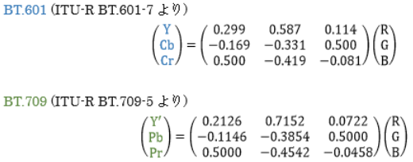

四則演算
やっぱり計算出来ないとプログラミングは始まりません。というわけでまずは四則演算。
int i = 0, delay_time;
//中略
i = i + 1;
double time = 8.5 - 2.1;
double cure = 1.5 * time;
double damage = cure / 10;
unsigned int temp1 = delay_time / 60;
tm_sec += delay_time % 60;
i += 1;
cure -= 10;
i++;
++i;
i--;
--i;
3行目から7行目が四則演算ですね。6行目の割り算は整数精度で行われ、小数点以下は0に近い方向に切り捨てられることを忘れないで下さい。
8行目は割り算の余りを求めるものです。これは整数精度の時のみ使えます。もし浮動小数点型で割り算のあまりを求めたいときは、math.hのfmod関数を使いましょう。
9行目は2行目の略記です。10行目のように引き算などほかの演算記号も同じように使えます。
11行目と12行目はインクリメント演算子、13行目と14行目はデクリメント演算子と呼ばれます。1増やしたり1減らしたりする処理を簡便に書くことができます。
| 演算 | 演算子 | 例 | 意味 |
| インクリメント | ++ | a++ | a に 1 を加える（後置演算） |
| ++a | a に 1 を加える（前置演算） |
| デクリメント | -- | a-- | a から 1 を引く（後置演算） |
| --a | a から 1 を引く（前置演算） |
使用上の注意です。下のコードを見てくだい。
インクリメント・デクリメント演算子は前置と後置で意味が変わるので注意です。私は覚えるのがめんdいので、後置しか使わない派です。
暗黙の型変換とキャスト
ここまでの例ではすべて計算するものの型は揃っていました。では違う場合はどうなるでしょう？
const int a = 10;
const double b = 3;
auto ans = a / b;
int ans2 = ans;
auto ans3 = (int)ans;
変数ansの型はdouble、ansには3.3333333(以下略)が入ります。
一方でans2の型はint、ans2には3が入ります。
また3行目のように型を明示することもできます。これを「キャスト」といいます。ans3の型はint型になります。
- 式の中で行われる変換
-
優先順位の高い型に変換されます。優先順位は
bool < char < short < int < long < long long < float < double
です。
- 代入時の変換
- 左辺の型と右辺の型が異なっている場合は、左辺の型に変換します。
- キャスト時の変換
- 有無をいわさずに指定した型に変換されます。
この法則にしたがって解釈すると、3行目は、aの型はint、bの型はdoubleなのでaがdouble型に変換され(式の中で行われる変換)、double型同士の計算となります。
また4行目は変数ansの型はdoubleですが、左辺のans2の型がintなのでint型に変換されます(代入時の変換)。
このことを利用して割り算の余り(surplus)を求めてみましょう。
const double input = 23;
const int divisor = 7;
const int temp = (int)input / divisor;
const double surplus = input - (divisor * temp);
inputをキャストする必要があるのか？と怒られそうですが、べつに整数精度の結果で事足るのでキャストしました。
よくキャストを「ある型とみなす」と説明する人が居ますが、誤りです。bitの並びが変わることもあることからわかるように、実際に変換されます。
コーディングの作法
C言語のキャストは、非常に強力で、どんな型にでも変換ができます。ゆえにしてはいけない型変換もできてしまいます。
そこでC++ではキャストが4種類にわかれました。
| 名称 | 説明 | 使用 |
|---|
| dynamic_cast | 基本クラスから派生クラスへのキャスト | 使用するべきではない |
| const_cast | const を外すキャスト | 使用するべきではない |
| static_cast | double から int など暗黙の変換のあるキャスト | 使用可 |
| reinterpret_cast | double * から long long などの無理やりキャスト | なるべく使用しない |
詳細な説明は
キャスト | プログラマーズ雑記帳
http://yohshiy.blog.fc2.com/blog-category-9.html
に譲りますが、Cのキャストは理由がない限り使わず、C++のstatic_castを使用しましょう。キャストしないに越したことはありませんが、
static_castならかなり安全に使用できます。Cのキャストは使うな。
const int temp = static_cast<int>(input) / divisor;
もっとも、まともなコーディングをしていれば、malloc,calloc,realloc関数以外でキャストを使う場面はないはずです。
もしあなたがキャストを使おうとしているならば、それはあなたが寝ぼけているのか、ライブラリ作者がうっかりしている、ということになります。
後者なら、作者に文句を言いましょう。(実際私はDxLibraryの作者に色の扱いについて文句を言って、Ver 3.13eで修正してもらいました)
signedとunsignedの変換はとくに理由のない限りしないようにしましょう。
問題
画像処理、映像処理の分野において、色を表すのにRGB系のほかにYUV系、YCbCr系、Y'PbPr系などがある。
RGB座標系からYCbCr系への変換にはBT.601 (ITU-R BT.601-7 より) という規格があり、
RGB座標系からY'PbPr系への変換にはBT.709 (ITU-R BT.709-5 より) という規格がある。
変換行列は以下のとおりである。

BT.709の式に従いY'を求めるプログラムが以下に示すものである。完成させよ。
#include <cstdio>
#include <cstdint>
typedef uint8_t color_e_t;
int main(void){
const color_e_t r = 137;
const color_e_t g = 195;
const color_e_t b = 235;
const color_e_t y = static_cast<color_e_t>( );
printf("R:%d G:%d B:%d -> Y':%d\n", r, g, b, y);
return 0;
}
回答
9行目のみ。
const color_e_t y = static_cast<color_e_t>(0.2126* r + 0.7152 * g + 0.0722 * b)
promotionsとconversions
型変換、と一口に言っても2つあり、promotionsとconversionsとそれぞれ呼ばれます。
promotionsがなにか、については
C++11の文法と機能(C++11: Syntax and Feature)
http://ezoeryou.github.io/cpp-book/C++11-Syntax-and-Feature.xhtml#conv.prom
に丸投げするとして、promotionsでなければconversionsである(そりゃそーだ)。
conversionsは一般に危険をはらんでいます。何故かというと、変換元の数値を変換先の型で表せないかもしれないからです。
unsigned charが8ビット、unsigned intが16ビットと仮定して実例を上げてみましょう。
int main(void){
unsigned int ui = 1234 ;
unsigned char uc = ui ; // 210
}
この場合、unsigned int型は、16ビット、uiの値は、2進数で表すと0000010011010010になります。unsigned char型は8ビット。つまり、この場合の対応する下位桁の値は、2進数で11010010（uiの下位8ビット）です。よって、ucは、10進数で210となります。
しかし、そもそも型変換でオーバーフローやアンダーフローを起こさないようにコーディングするべきでしょう。